LessonManage デザイン案
レッスン記録アプリの画面を6案作り、実際に操作して比べた結果です。各案の「触ってみる」で、その場でプロトタイプを動かせます（録音は時間が進むだけの疑似動作です）。データは例として入れたものです。
私のおすすめ：F（Aの見た目＋Eの曲ページ）
- 見た目はA（iPhoneのメモに近い形）。白いまとまりとグレーの地の組み合わせで、毎日開いても疲れにくい。
- 曲ページはE（メッセージのように、メモ・録音・レッスンが日付順に1本で積み上がる）。いつのメモの頃にどんな音だったかを、上から下へ追える。
- 曲ページから録った録音は、既定で「直近のレッスン後の個人練」としてつながる。要件の「1つの録音をレッスンと曲の両方に出す」を、選ぶ手間なしで満たせる。
タップ数は案ごとの差が1〜2回しかなく、決め手になりませんでした。差が出たのは「最初の画面で何が見えるか」「録音中に何ができるか」「曲の履歴がどう並ぶか」の3点です。
検証したこと
同じサンプルデータで、次の3つの操作を全案で自動実行し、タップ数と結果を確かめました（文字入力とEnterは数えていません）。
| 操作 | A | B | C | D | E | F |
|---|---|---|---|---|---|---|
| 新しいレッスンを作り、録音しながら学んだこと2つ・宿題1つを書いて録音を止める | 7 | 7 | 7 | 6※ | 8 | 7 |
| ホームから個人練を録り、曲と一言をつけて保存 | 5 | 5 | 5 | 6 | 4 | 5 |
| 曲を開いてメモを1つ足す | 4 | 4 | 4 | 4 | 3 | 4 |
| 最初の画面で両方の種類の宿題が見える | △ | △ | × | ○ | ○ | △ |
| レッスンの録音中にメモを書ける | ○ | ○ | ○ | × | ○ | ○ |
| 曲のメモと録音が日付順に1本で読める | × | ○ | × | × | ○ | ○ |
| 曲から録った録音が、レッスン後の個人練につながる | × | × | × | ○ | ○ | ○ |
※ Dは録音を止めてからレッスンのページができるので、メモは録音のあとに書くことになります。△：A・Fは2つ目の種類がスクロールの先、Bは横にスワイプした先にあります。
触っていて気づいて、全案に入れたこと
- 個人練中の「譜面台」画面。最初の作りでは、個人練の録音シートが画面を覆って宿題が見えなくなっていました。個人練をしている間こそ宿題を見たいはずなので、録音中は宿題を大きく、学んだことをその下に出す画面にしました（Aの4枚目）。
- 箇条書きの二重登録を直しました。Enterで次の行へ進むと、同じ項目が2回入る不具合が自動実行で見つかりました。
- レッスンの録音は「メモを書く」で小さくたためる。録音を続けたままレッスンのページに戻り、上部の赤い帯とダイナミックアイランドに経過時間が出ます。帯の「停止」で保存されます。
各案
A純正メモ風
参考：iPhoneのメモ・ボイスメモ・設定グレーの地に白いまとまりを置く、iPhone標準アプリの形。ホームは種類ごとに直近レッスンのカード。下のタブで「ホーム・レッスン・曲」を切り替えます。


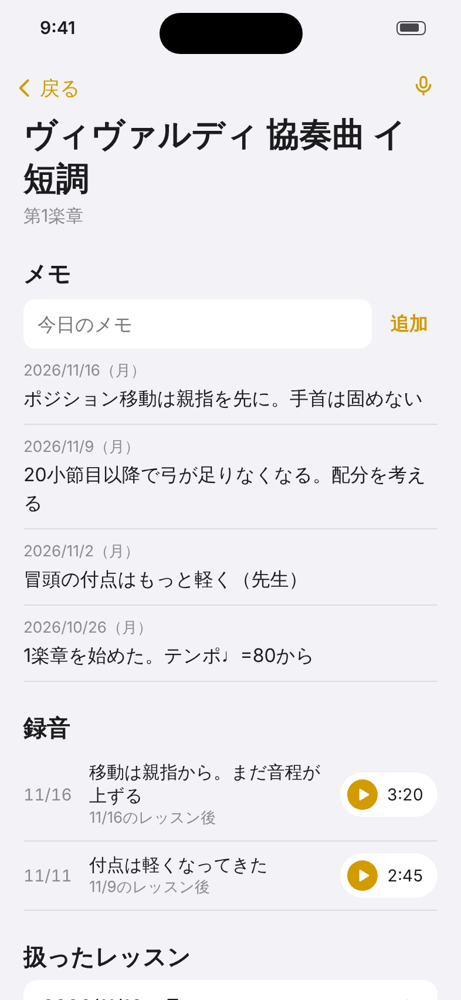
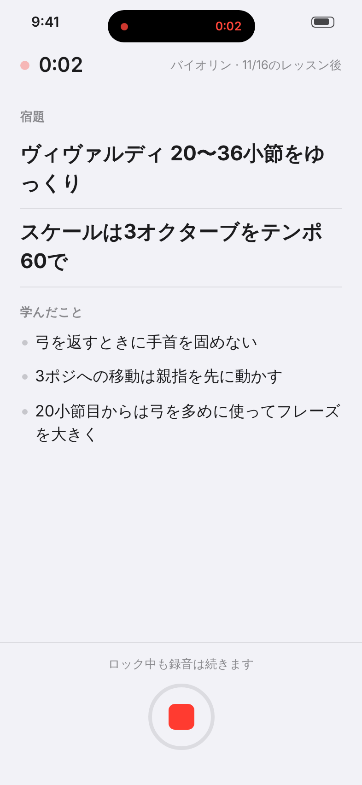
良いところ
- 見慣れた形で、どこを押せばいいか迷わない
- 文字が大きく、行間が広くて読みやすい
気になるところ
- ホームが縦に長く、ボイトレは下までスクロールしないと見えない
- 曲ページはメモと録音が別の段で、どのメモの頃の録音か追いにくい
Bスレッド
参考：Day One・ジャーナルのタイムラインレッスンを親、個人練をその下に返信のようにつなぐ形。上に各種類の宿題を横に並べ、下はレッスンの流れを新しい順に並べます。
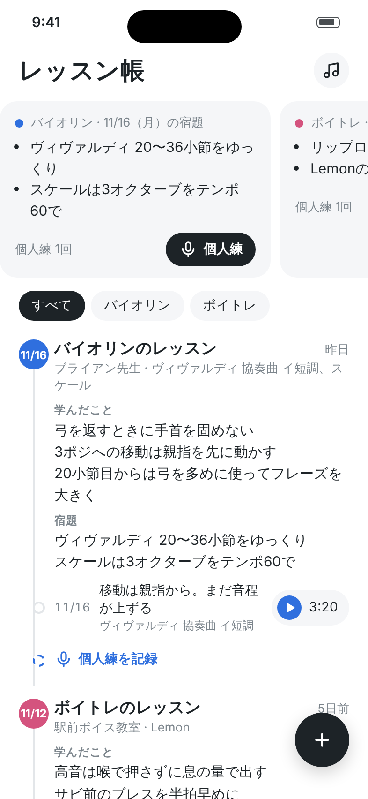
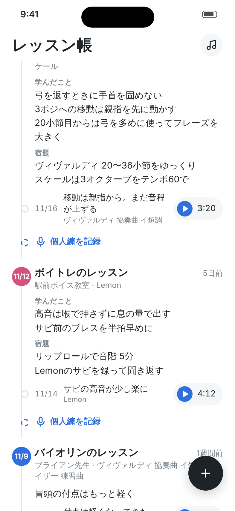
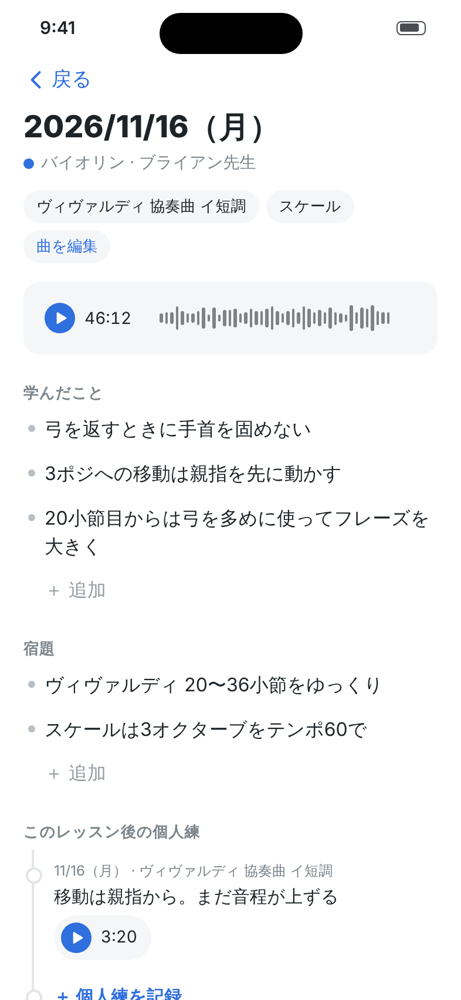
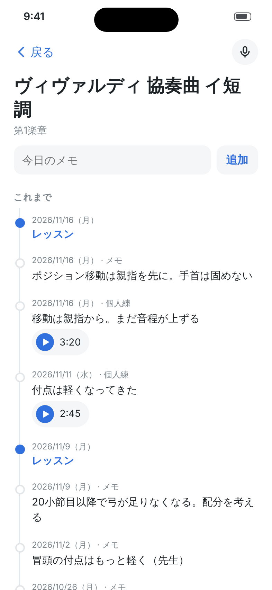
良いところ
- レッスン→個人練→次のレッスンの流れが線でつながって見える
- 曲ページも1本の流れで読める
気になるところ
- 上の宿題カードと下の流れに同じレッスンが2回出る（入口の重複）
- 情報が多く、画面が詰まって見える
C大きいボタン
参考：Duolingo種類ごとに1画面。上のタブで種類を切り替え、宿題を大きく出して、その下に厚みのある「個人練をはじめる」ボタン。ボタンはときどきひとりでに沈みます。種類ごとに色が変わります。
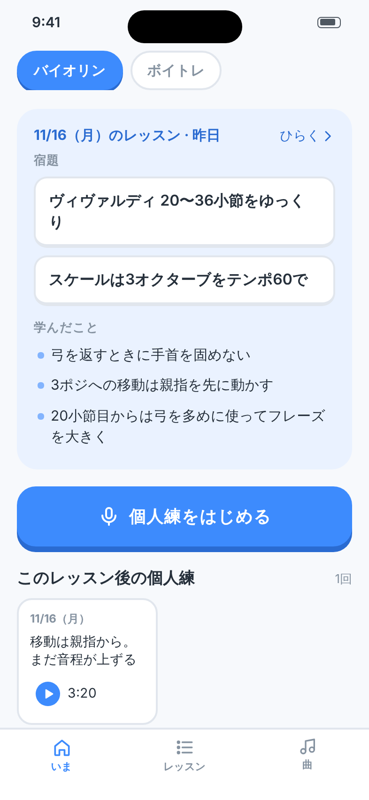
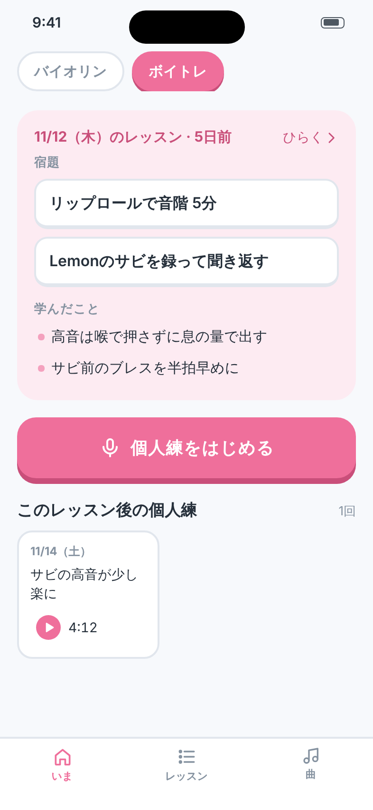
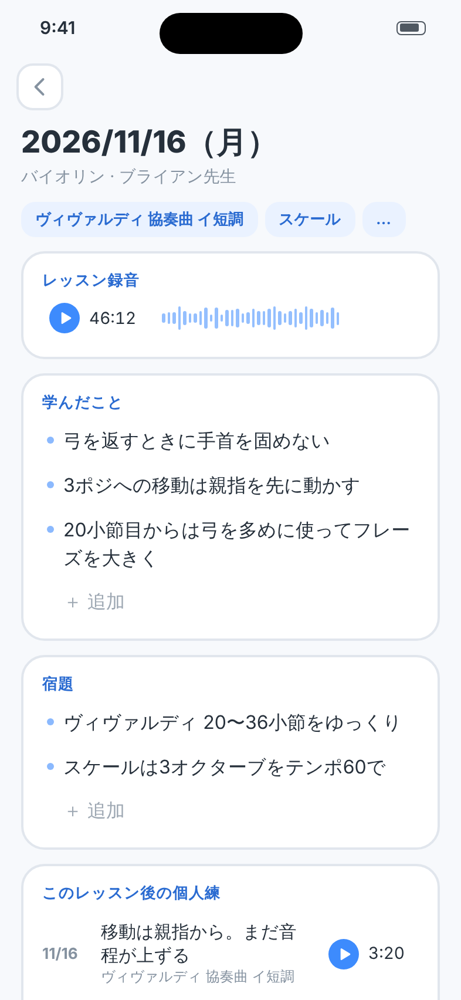
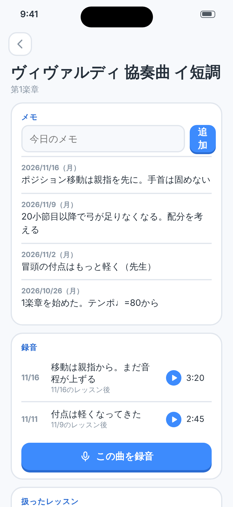
良いところ
- 個人練の入口がはっきりしていて、押したくなる
- 色で今どの種類を見ているか分かる
気になるところ
- 一度に1種類しか見えない
- 枠とボタンが多く、記録帳としては画面が重い
D録音が先
参考：ボイスメモ下の大きな録音ボタンでとにかく録り、止めてから「何の録音？」（個人練・新しいレッスン・曲だけ）を選ぶ形。ホームは宿題のまとめと、録音の一覧。夜の紺とはちみつ色。
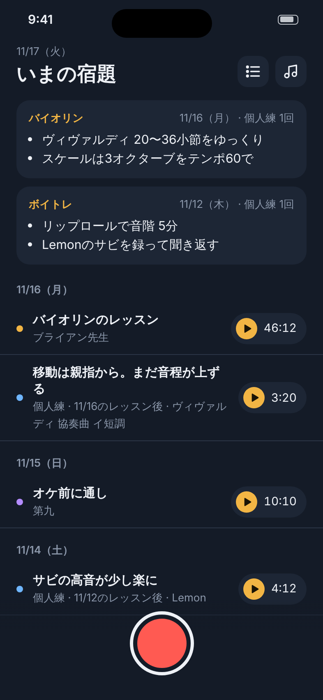
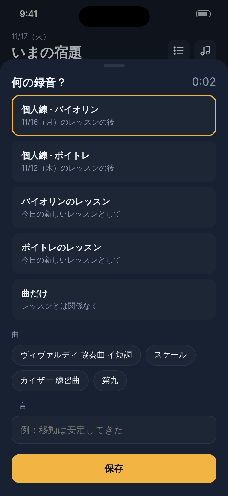
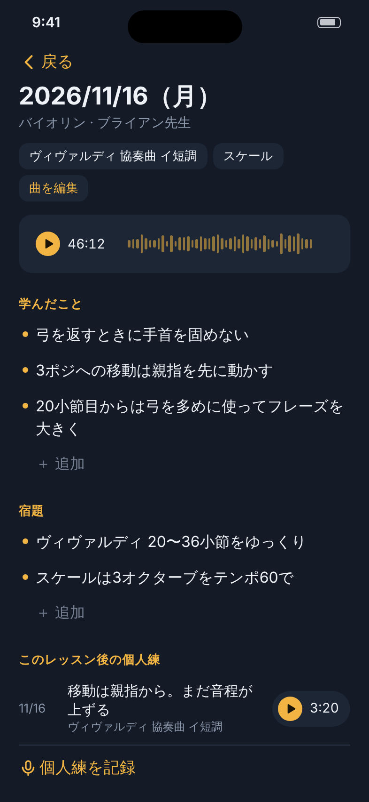
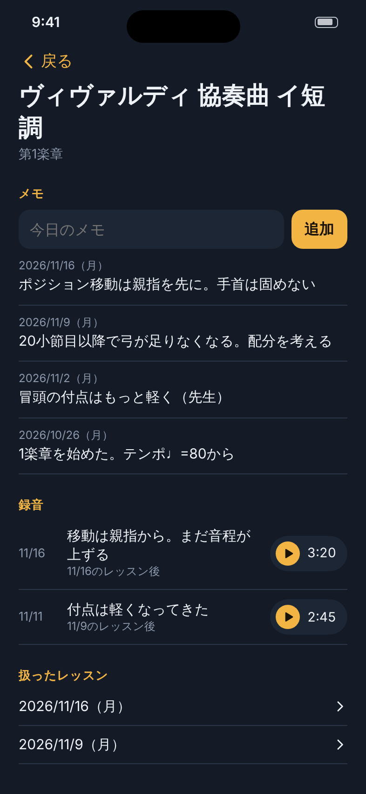
良いところ
- 何も考えずにすぐ録れる
- 両方の宿題が最初の画面に収まる
気になるところ
- レッスン中にメモを書けない（録音を止めるまでページがない）
- 毎回「何の録音？」を選ぶ手間がある
E曲が軸
参考：メッセージ・ミュージックのライブラリホームは宿題のまとめと、曲のカード。曲ページはメッセージのように、メモ・録音・レッスンが日付順に積み上がります。曲カードのマイクから録ると、直近のレッスン後の個人練として自動でつながります。
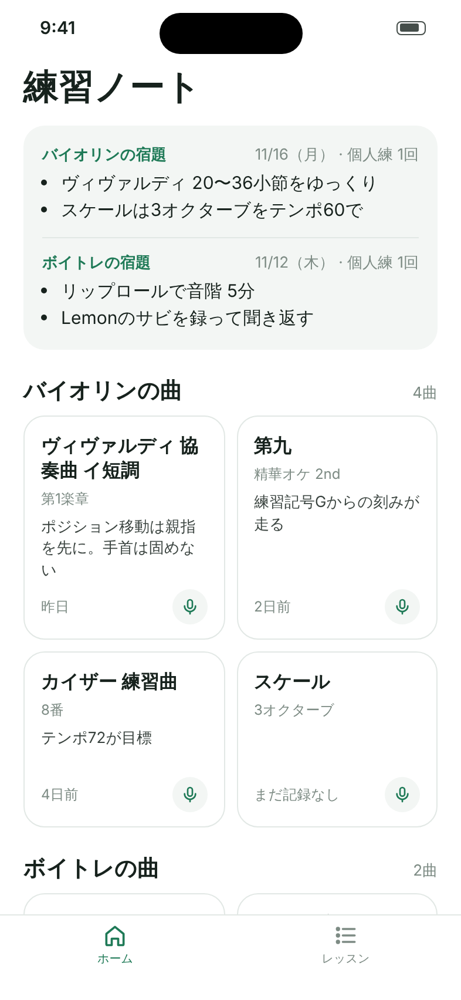
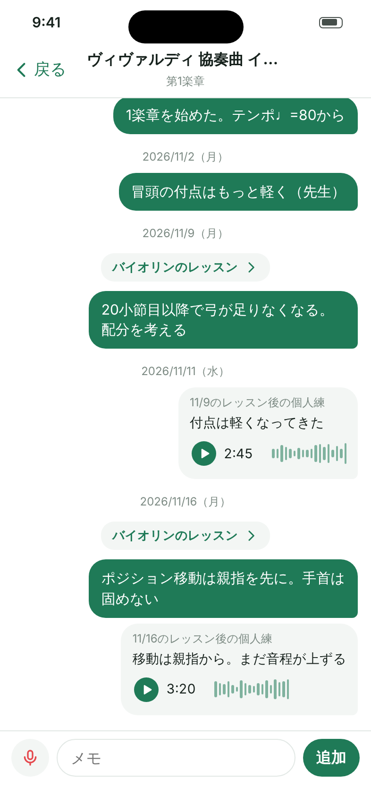
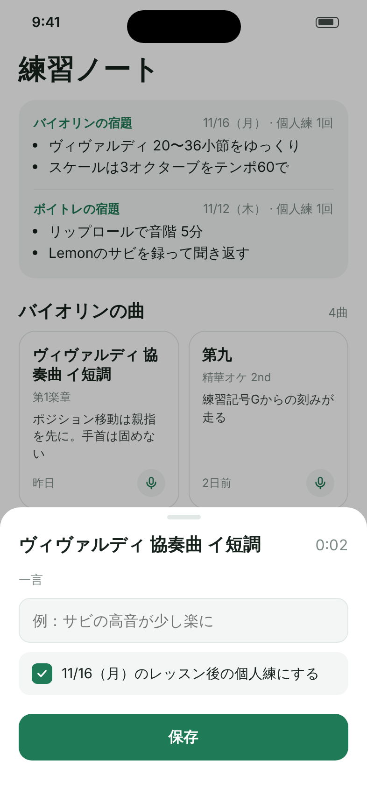
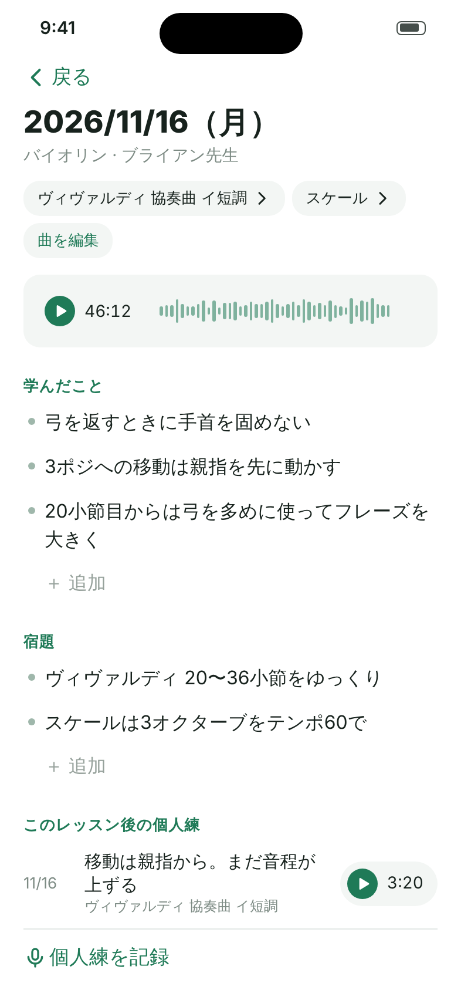
良いところ
- 曲ページで、メモと録音の移り変わりが上から下へ追える
- 個人練が最短（4タップ）で録れる
気になるところ
- ホームに学んだことが出ていない（要件とずれている）
- 曲が増えるとホームが長くなる
F組み合わせ（A＋E）
おすすめAのホーム・レッスンページに、Eの曲ページと「曲から録る」流れを組み合わせた案。
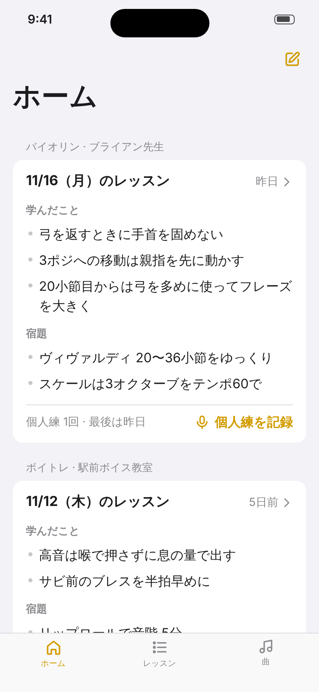
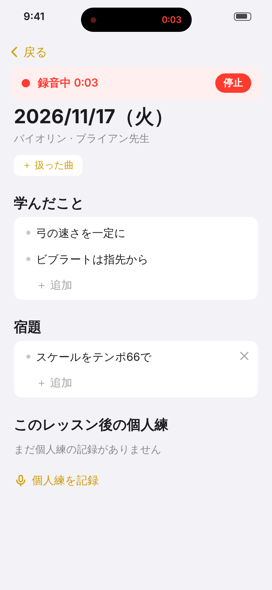
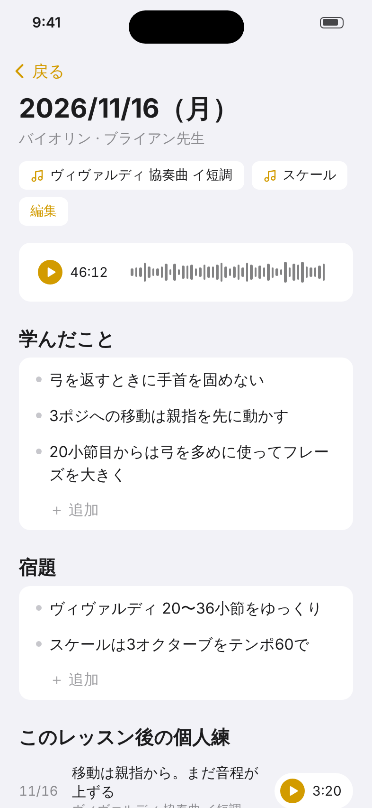
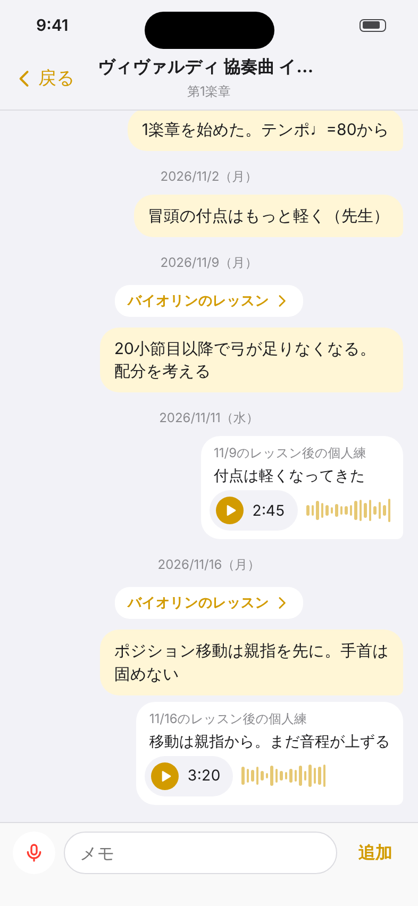
良いところ
- Aの読みやすさと、Eの曲ページの追いやすさの両方
- 要件をすべて満たしている
気になるところ
- ホームが縦に長い点はAのまま（ボイトレはスクロールの先）
次に決めたいこと
- 見た目の方向：純正寄り（A・F）／白地に色（B・E）／ポップ（C）／暗め（D）
- ホームに2種類をどう並べるか：縦に積む（A・F）／宿題だけ上にまとめる（D・E）／種類ごとに切り替える（C）
- 曲ページ：日付順に1本（B・E・F）／メモ・録音・レッスンの段に分ける（A・C・D）
- 個人練の「譜面台」画面を採用するか
プロトタイプはリポジトリの design/prototypes/ にあります。録音・再生は時間が進むだけの疑似動作で、入力した内容はページを閉じると消えます。